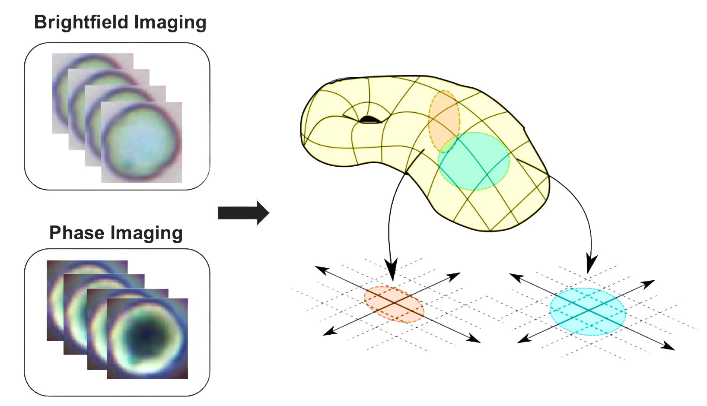
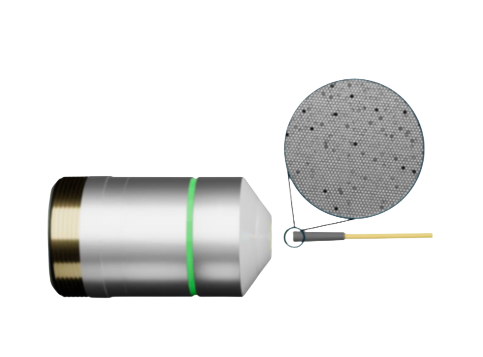
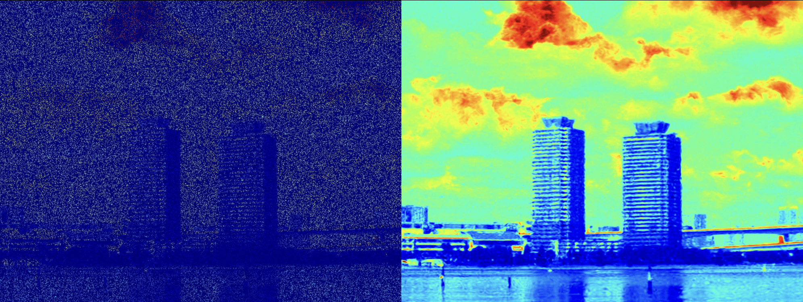
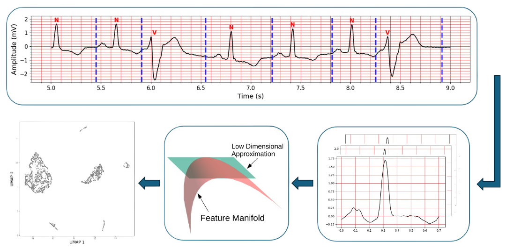
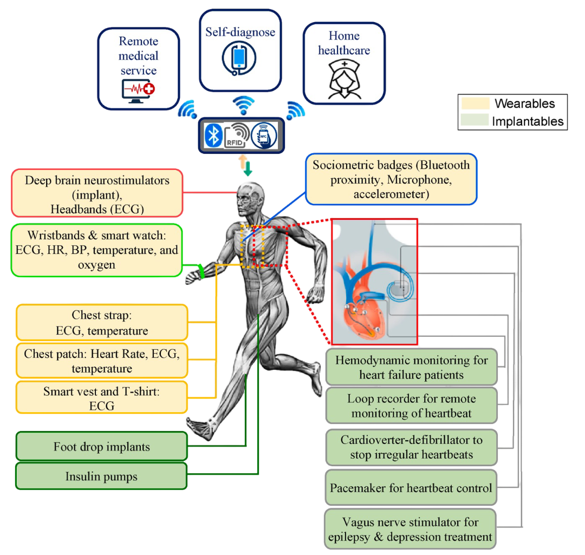
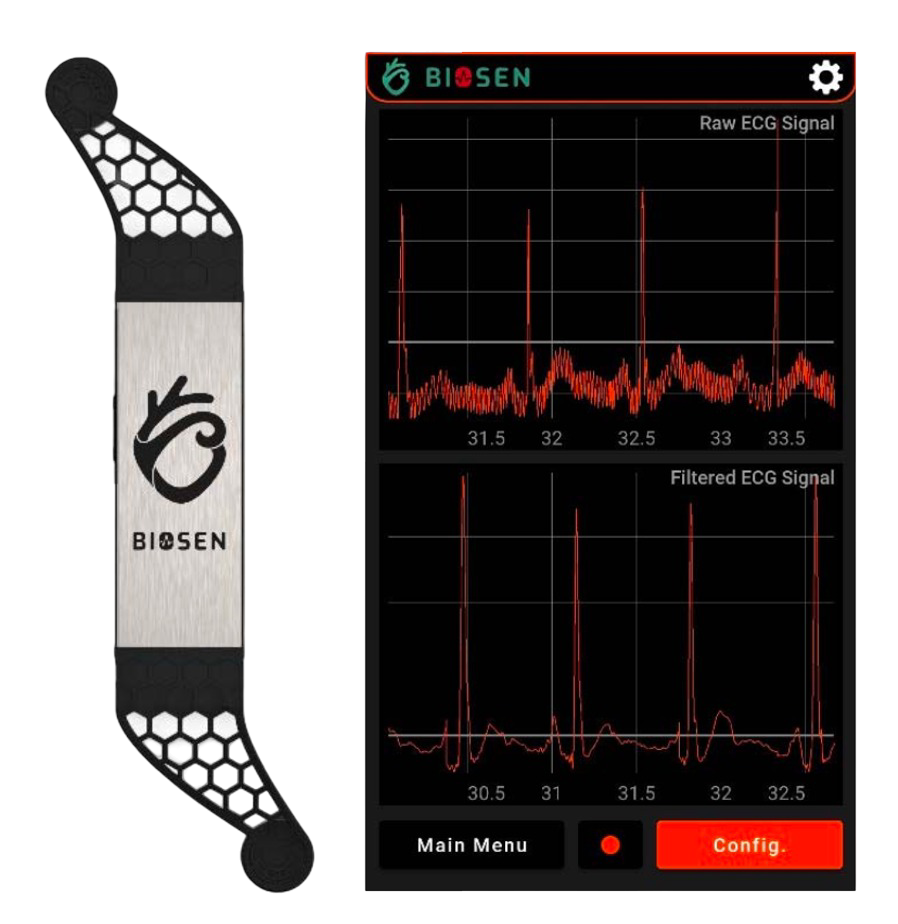

|
Amir Reza Vazifeh I'm a PhD student in Electrical and Computer Engineering at Princeton University, where I work in the Imaging Physics Lab under the supervision of Professor Jason Fleischer. I also collaborate with the Computational Imaging Lab, supervised by Professor Felix Heide. My research focuses on Computational Imaging and Optics, AI in healthcare and medicine, Computer Vision and Wearable Sensors. |

|
Research
Representative papers are highlighted.
|
 |
Manifold Alignment for Label-Free Cell Phenotyping in Multimodal Microscopy
Amir Reza Vazifeh, Jason W. Fleischer Microscopy, Histopathology and Analytics (Microscopy), Optica Biophtonics Congress 2026 publication (TBA) / code we presented a dimensionality-reduction framework for multimodal microscopy that integrates information from different imaging modalities into a shared low-dimensional manifold and demonstrated its effectiveness for live/dead cell phenotyping. |
|
 |
Seeing Through Fibers: Unsupervised Image Reconstruction in Fiber Bundle Imaging Systems
Amir Reza Vazifeh, Congli Wang, Amogh Joshi, Ilya Chugunov, Jipeng Sun, Jiwoon Yeom, Jason W. Fleischer, José S. Pulido, Felix Heide Optics Express 2026 project page / publication / code We introduce an unsupervised method that reconstructs high-resolution fiber bundle images from misaligned bursts without calibration or paired data. |

|
An Open-Source Analysis of Cardiomyopathy Using Machine Learning and Electrocardiograms
Arda Altintepe, Asu Rustemli, Amir Reza Vazifeh, Jason W. Fleischer Diagnostics 2026 publication / code We developed an open-source ECG-based machine learning pipeline to distinguish hypertrophic from dilated cardiomyopathy subtypes using standard and vectorcardiogram features. |
|
 |
Snapshot Hyperspectral Imaging via Compressive Sensing and Implicit Neural Representation
Jatearoon Boondicharern, Amir Reza Vazifeh, Jason W. Fleischer Computational Optical Sensing and Imaging (COSI), Optica Imaging Congress 2025 publication / code We propose a snapshot hyperspectral imaging method using randomized aperture codes and implicit neural representations. |
|
 |
Manifold Learning for Personalized and Label-Free Detection of Cardiac Arrhythmias
Amir Reza Vazifeh, Jason W. Fleischer arXiv 2025 preprint / code We use nonlinear dimensionality reduction for unsupervised, personalized heartbeat phenotyping from ECGs and arrhythmia detection. |
|
 |
Advancing personalized healthcare and entertainment: Progress in energy harvesting materials and techniques of self-powered wearable devices
Prithu Bhatnagar, Sadeq Hooshmand Zaferani, Nassim Rafiefard, Bardia Baraeinejad, Amir Reza Vazifeh, Raheleh Mohammadpour, Reza Ghomashchi, Harald Dillersberger, Douglas Tham, Daryoosh Vashaee Progress in Materials Science (IF:40) 2023 publication We reviewed recent advances in self-powered wearable devices, covering energy harvesting techniques, power management, and their application in long-term health and wellness monitoring. |
|
 |
Design and Implementation of an Ultralow-Power ECG Patch and Smart Cloud-Based Platform
Bardia Baraeinejad, Masood Fallah Shayan, Amir Reza Vazifeh, Diba Rashidi, Mohammad Saberi Hamedani, Hamed Tavolinejad, Pouya Gorji, Parsa Razmara, Kiarash Vaziri, Daryoosh Vashaee, Mohammad Fakharzadeh IEEE Transactions on Instrumentation and Measurement 2022 publication We developed an ultra-low-power, lightweight ECG patch for long-term monitoring, paired with an AI-assisted cloud platform for denoising and arrhythmia detection. |
Miscellanea
Teaching &
|
Princeton ECE 452: Biomedical Imaging — Assistant in Instruction, Spring 2025 & 2026 Princeton ECE 435/535: Machine Learning and Pattern Recognition — Assistant in Instruction, Fall 2024 Princeton Laboratory Learning Program (LLP) — Mentoring high school students, Summer 2025 |
Review |
IEEE Journal of Biomedical and Health Informatics |